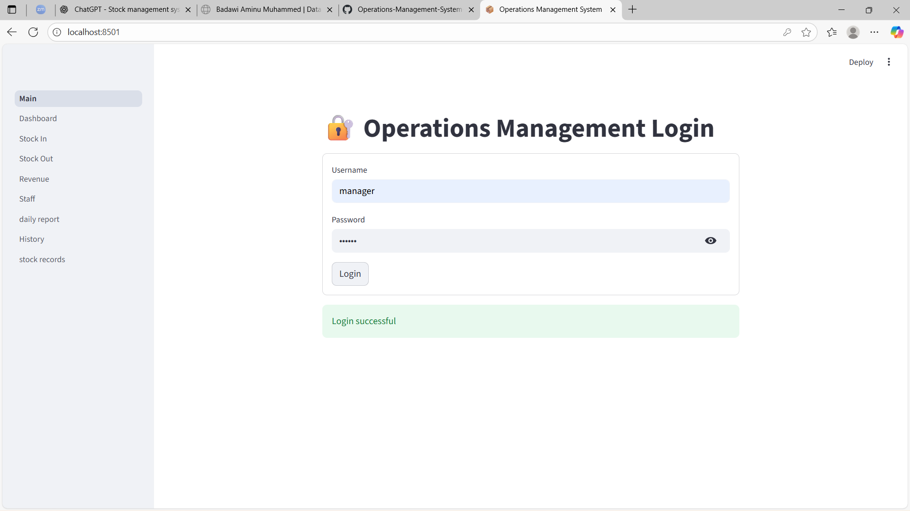

Data Scientist . AI & ML Engineer . Research Data Analyst
Cigma CRM Sales-Store Management System
A production-style CRM and store operations platform built with Streamlit to support role-based sales workflows,
inventory movement, customer profiles, orders, and management reporting.
This project solves day-to-day sales and store administration problems in a single system. It combines CRM records,
stock control, order flow, and transaction history so operational teams can track performance without switching tools.
Role-based access for admin and sales operators
Unified customer, order, sales, and item records
Live KPI dashboard for store operations visibility
Audit-friendly transaction and activity history
Core Capabilities
Dashboard KPIs: low-stock, sold-out, stock in/out, total sales, open orders
Goods and item management with image upload support
Stock-in and stock-out transaction handling
Sales workflow with cart handling and receipt generation
Orders workflow including made-to-order requests
Customer profile management and global search

Primary application home interface for operations and navigation.
Sales & Operations Workflow
The workflow supports a full cycle from item intake through customer conversion and fulfillment, with synchronized
inventory and order updates at each stage.
Item onboarding and stock registration
Customer and order entry during sales workflow
Automatic stock movement records tied to transactions
PDF receipt and order-output generation for records
Architecture & Data
Frontend + app layer: Streamlit (`app.py`)
Data store: SQLite by default (`data/store_crm.db`)
Optional database mode: Postgres via `DATABASE_URL`
Media storage: item and user uploads directory
Scope support for multiple businesses in one database
Reports & Exports
Receipt PDF generation for completed sales
Order PDF output for tracking and fulfillment
Reports page with CSV export for analysis
History view for traceable operational events
Deployment & Security
Cloud deployment through Render with persistent storage
Environment-based configuration for database and tenancy
Role login controls for operational separation
Production guidance to rotate default credentials immediately
Business Impact
Improves visibility of sales and stock health in real time
Reduces manual tracking errors across order lifecycle
Speeds up customer lookup and service response
Supports operational decisions with export-ready data
Tech Stack
Python with Streamlit for application interface and workflow orchestration
SQLite default storage with optional Postgres mode via environment configuration
Pandas-powered data operations and report preparation
PDF export utilities for receipts and operational order documents
Render deployment workflow with persistent storage configuration